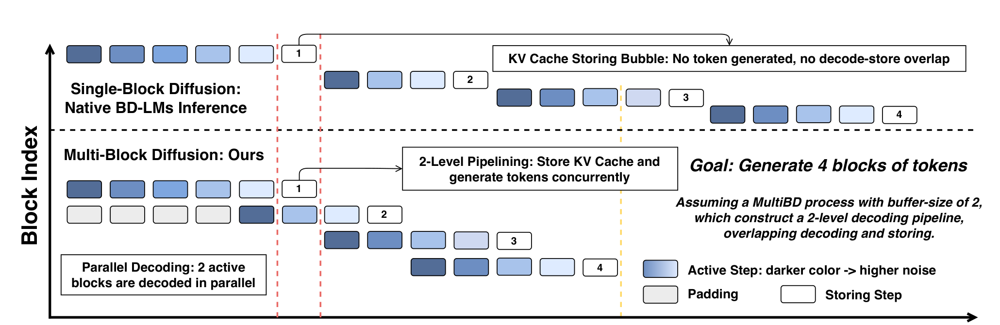
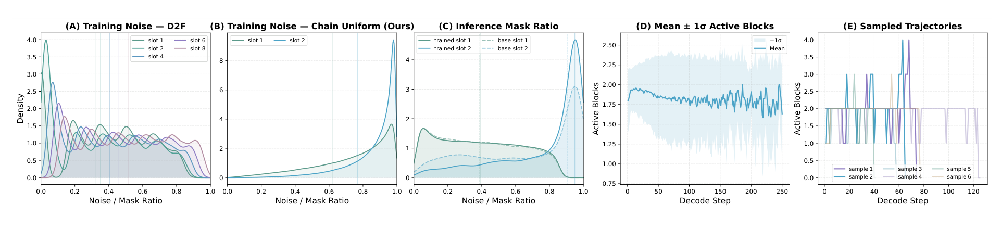
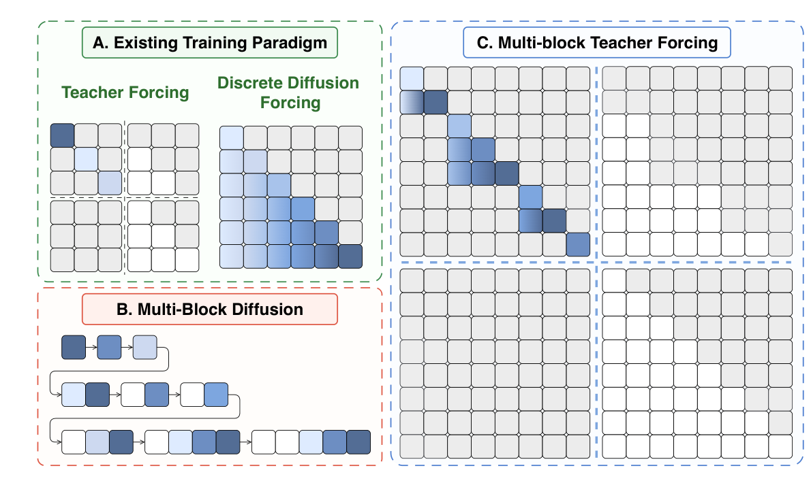
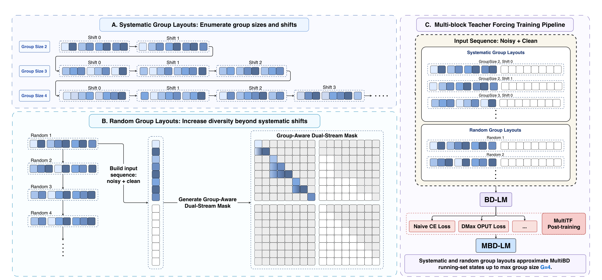
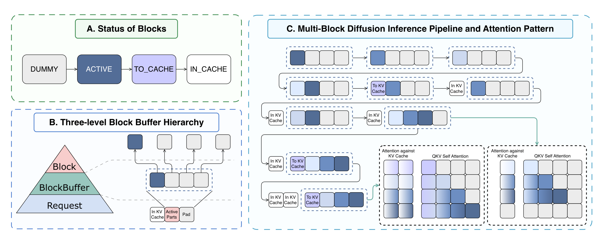
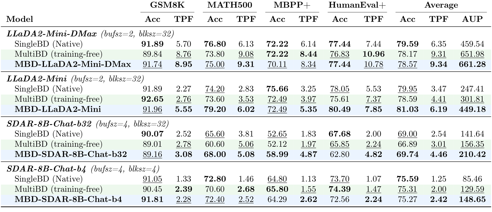
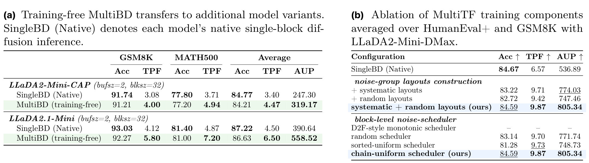
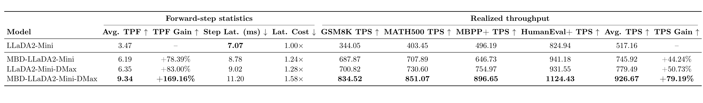

TL;DR
Block Diffusion Language Models (BD-LMs) make diffusion-based text generation more practical by supporting KV caching and flexible-length generation. However, native BD-LMs usually perform Single-Block Diffusion (SingleBD): each forward pass refines one noisy block conditioned on a clean cached prefix. This preserves the serving benefits of BD-LMs, but blocks are still processed sequentially.
We propose Multi-Block Diffusion Language Models (MBD-LMs), a formulation and post-training recipe for reliable Multi-Block Diffusion (MultiBD). On the model side, MBD-LMs are BD-LMs post-trained with Multi-block Teacher Forcing (MultiTF) so they can handle practical MultiBD running-set states. On the inference side, MBD-LMs decode a bounded running-set of consecutive blocks through an optimized Block Buffer runtime.
The training and method code lives in SJTU-DENG-Lab/mbd-lms. The executable inference runtime is Diffulex: use the Diffulex mbd-lms branch for experiment reproduction, and Diffulex main for engine development and new decoding algorithms.
Empirically, MBD-LLaDA2-Mini increases average Tokens Per Forward pass (TPF) from 3.47 to 6.19 and improves average accuracy from 79.95% to 81.03%. When combined with DMax, MBD-LLaDA2-Mini-DMax reaches an average TPF of 9.34 with only a 1.02 percentage-point average accuracy drop on math and code benchmarks.

From SingleBD to MultiBD
Diffusion Language Models (DLMs) generate text through iterative denoising and naturally support parallel token refinement. Fully bidirectional DLMs, however, are difficult to serve efficiently because they do not naturally support KV caching or dynamic-length generation. BD-LMs address this issue by generating text in block-causal form: completed blocks become a clean cached prefix, and the current block is denoised under block-causal attention.
This design gives native BD-LMs efficient intra-block parallelism, but not inter-block parallelism. In SingleBD, a later block cannot begin refinement until the current block has finished decoding and has been committed to the KV cache. The result is a storing bubble: during cache storing, no new token is generated and no decode-store overlap is exploited.
MultiBD removes this bottleneck by maintaining a small running-set of consecutive blocks. Earlier blocks in the running-set may be completed and waiting to enter the cache, while later blocks can already be active noisy blocks. This enables the model to refine future blocks while completed blocks are being committed to the KV cache.
Why training-free MultiBD is not enough
A natural question is whether existing BD-LMs can simply run MultiBD at inference time. The paper shows that this is only partially effective. Direct MultiBD inference increases TPF, confirming that multi-block decoding relaxes the single-block bottleneck, but it can degrade accuracy because the model was not trained on practical MultiBD states.
The mismatch has two components. First, practical MultiBD does not decode an unbounded noisy suffix. It uses a bounded running-set, often with an active part around two blocks and occasional expansion to three or four active blocks. Second, active slots can have heterogeneous mask-ratio patterns: adjacent slots may differ substantially in noise level. Reliable MultiBD therefore requires training states that match both the bounded running-set structure and the slot-wise noise patterns observed during inference.

MBD-LMs: A Running-Set View of BD-LMs
MBD-LMs formulate BD-LM generation around a running-set of consecutive blocks. At decoding step s, the running-set contains the blocks that have not yet entered the prefix KV cache. It includes active noisy blocks and completed preceding blocks waiting to be cached. Blocks before the running-set form the clean cached prefix.
This view unifies several regimes. Teacher-Forcing-trained BD-LMs correspond to the SingleBD extreme, where the model observes one noisy block conditioned on a clean cached prefix. D2F introduces visibility among multiple noisy blocks, but its training states still differ from practical MultiBD in running-set size and slot-wise noise patterns. Practical MultiBD is the bounded intermediate regime: the running-set should be larger than one to expose inter-block parallelism, but small enough to keep each forward pass efficient.

MultiTF: Post-Training BD-LMs for MultiBD
Multi-block Teacher Forcing (MultiTF) turns BD-LMs into MBD-LMs by constructing training states that resemble practical MultiBD inference. Instead of corrupting only one block as in standard teacher forcing, MultiTF corrupts a bounded group of consecutive blocks, called a noise-group, while conditioning later groups on clean earlier groups.
Noise-group layouts
Systematic layouts enumerate group sizes and shifts so that blocks appear at different group-relative positions. Random layouts add non-regular group-size combinations and boundary patterns.
Chain-uniform scheduling
Within each noise-group, mask ratios are sampled monotonically but randomly, producing larger and more diverse slot-wise noise gaps than a fixed D2F-style monotonic schedule.
Dual-stream masking
Noisy blocks inside the same noise-group can attend to each other under block-causal visibility, each noise-group can condition on its clean prefix, and clean tokens are prevented from attending to noisy tokens.
The resulting inputs are used for masked-token cross-entropy, and model-specific objectives such as DMax OPUT can be applied on top of the same MultiTF input construction.

Optimized MultiBD with Block Buffer
MultiBD is useful only if the additional parallelism can be translated into wall-clock speedup. A naive implementation directly materializes the current running-set as the physical input to each forward pass. This exposes inter-block parallelism, but the number of processed tokens changes over time and across requests, making CUDA Graph capture and replay difficult.
To make MultiBD practically executable, the paper introduces the Block Buffer mechanism. A Block Buffer contains a fixed number of physical block slots. Real resident blocks inside the buffer form the logical running-set, while trailing dummy slots reserve capacity for future blocks. A future block enters decoding by activating an existing dummy slot instead of extending the physical input sequence. When the front block is completed, it is committed to the KV cache and the buffer slides forward by appending a new dummy slot at the tail.
Each slot follows the state transition dummy -> active -> to-cache -> in-cache. This design preserves prefix-cache reuse, keeps input shapes static, overlaps decoding with KV-cache storing, and supports CUDA Graph replay.

mbd-lms Defines and Trains MBD-LMs
The SJTU-DENG-Lab/mbd-lms repository is the home for the method-side work. It is where Multi-block Teacher Forcing is implemented, where training configs live, and where checkpoints are prepared before they are evaluated through the Diffulex runtime.
MultiTF training
The repository contains the post-training path that constructs bounded noisy block groups, heterogeneous slot-wise mask ratios, and group-aware attention masks for practical MultiBD states.
Training assets
Use this repo for environment setup, dataset preparation, model-specific training configs, multi-node launch scripts, and checkpoint conversion utilities.
Method documentation
The project page, guidelines, and figures define the SingleBD-to-MultiBD transition, MultiTF, Block Buffer inference, and the reported training/evaluation setup.
Train and Prepare
Start here when working on MBD-LM training, reproducing MultiTF data construction, or converting trained checkpoints into usable model artifacts.
Open mbd-lms Training RepoRun and Serve
Move to Diffulex when you need benchmark execution, HTTP serving, optimized kernels, prefix caching, and system-level MultiBD runtime behavior.
Open Diffulex Reproduction BranchDiffulex Turns MultiBD into a Runnable System
MultiBD is not only a training or decoding idea. To make it useful, the inference engine must maintain a moving block buffer, reuse prefix KV cache, schedule active blocks, commit completed blocks, and keep execution shapes friendly to optimized kernels. Diffulex is the engine stack built for that job.
Block-aware runtime
Diffulex maps decoding_strategy=multi_bd to strategy-specific request state, scheduler, KV cache manager, model runner, and attention metadata.
Serving-oriented cache design
The engine preserves a clean cached prefix, supports prefix reuse, and commits completed blocks while later blocks are already being refined.
Practical optimization path
Diffulex integrates paged attention, CUDA Graph-friendly static execution, vLLM-backed layers, MoE paths, benchmark tooling, and HTTP serving.
For Reproduction
Use the Diffulex mbd-lms branch to reproduce the reported MBD-LMs experiments. This branch keeps configs and runtime assumptions aligned with the paper setup.
For New Systems Work
Use Diffulex main for engine development, open-source contributions, model support, kernel optimization, and new decoding algorithms that need to become real runnable systems.
Main Results
The experiments evaluate mathematical reasoning on GSM8K and MATH500, and code generation on MBPP+ and HumanEval+. The paper reports Accuracy, Tokens Per Forward pass (TPF), and Accuracy Under Parallelism (AUP), where TPF measures decoding parallelism and AUP summarizes the accuracy-parallelism trade-off.
The main trend is consistent across models: MBD-LMs substantially improve TPF over native SingleBD, and MultiTF often recovers or improves the quality lost by training-free MultiBD. On LLaDA2-Mini, MultiTF raises average accuracy from 78.59% under training-free MultiBD to 81.03%, while further increasing average TPF from 4.41 to 6.19. On SDAR-8B-Chat-b32, MBD-SDAR-8B-Chat-b32 increases average TPF from 2.54 to 4.46 and improves average accuracy from 69.00% to 69.74%.

Ablations further support the training-state alignment story. Combining systematic and random layouts gives the best AUP among the layout variants. Replacing the chain-uniform scheduler with other schedulers reduces the accuracy-parallelism trade-off; in particular, the D2F-style monotonic scheduler causes a large accuracy drop in the reported ablation, indicating that noisy-block visibility alone is not sufficient when slot-wise noise patterns are mismatched.

Throughput: From TPF to TPS
Higher TPF does not automatically imply proportional wall-clock speedup because MultiBD processes a larger static Block Buffer at each forward pass. The paper therefore separates useful committed tokens from the per-step computational workload. Increasing the buffer size can improve throughput when the useful-token gain outweighs the extra per-step cost introduced by resident blocks and dummy slots.
On the H100 TP=2 setup reported in Table 3, MBD-LLaDA2-Mini increases average TPF from 3.47 to 6.19 while step latency rises from 7.07 ms to 8.78 ms. The measured average TPS increases from 517.16 to 745.92. With DMax, MBD-LLaDA2-Mini-DMax increases average TPF from 6.35 to 9.34, and average TPS rises from 779.49 to 926.67 in the same table.

Code Paths
Use mbd-lms for training and method work; use Diffulex for inference, serving, and systems development.
# Training, MultiTF, datasets, configs, and checkpoint conversion
git clone https://github.com/SJTU-DENG-Lab/mbd-lms.git
cd mbd-lms
# Reproduce reported MBD-LMs inference/evaluation
git clone https://github.com/SJTU-DENG-Lab/Diffulex.git
cd Diffulex
git checkout mbd-lms
# Active engine development and new algorithms
git checkout mainCitation
The current draft does not include an official BibTeX entry. Please add the official citation after the paper is publicly released.
% TODO: add official BibTeX after releaseReferences
- Marianne Arriola et al. Block Diffusion: Interpolating Between Autoregressive and Diffusion Language Models. ICLR, 2025.
- Tiwei Bie et al. LLaDA2.0: Scaling Up Diffusion Language Models to 100B. arXiv preprint, 2025.
- Xu Wang et al. Diffusion LLMs Can Do Faster-than-AR Inference via Discrete Diffusion Forcing. arXiv preprint, 2025.
- Zigeng Chen et al. DMax: Aggressive Parallel Decoding for dLLMs. arXiv preprint, 2026.
- Shuang Cheng et al. SDAR: A Synergistic Diffusion-Autoregression Paradigm for Scalable Sequence Generation. arXiv preprint, 2025.